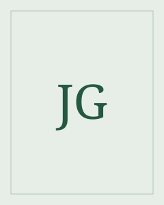

Johann Wolfgang von Goethe
Tiedonjano muuttuu kysymykseksi siitä, miten elää.
Goethe oli saksalainen runoilija, näytelmäkirjailija ja romaanikirjailija. Faust kuuluu hänen tunnetuimpiin teoksiinsa.
Etsi teokset kirjastostaElämä ja teokset
Goethe syntyi Frankfurtissa ja teki suuren osan elämäntyöstään Weimarissa. Faustin ensimmäinen osa ilmestyi vuonna 1808. Toinen osa valmistui hänen elämänsä loppupuolella ja julkaistiin vuonna 1832.
Tyyli ja teemat
Faust vaihtaa mittakaavaa läheisestä keskustelusta suuriin näkyihin. Runon rytmi, huumori ja väittely kantavat kysymyksiä tiedosta, halusta ja vastuusta. Mefistofeleen puhe haastaa jatkuvasti Faustin omat selitykset.
Tieto · Halu · Vastuu
Aloita tästä
Faust
Faustin tyytymättömyys omaan elämäänsä johtaa sopimukseen Mefistofeleen kanssa. Kirjaston teos sisältää molemmat osat.
Kiinnitä huomiota siihen, miten Faust perustelee valintansa ja miten Mefistofeles muotoilee saman asian toisin.